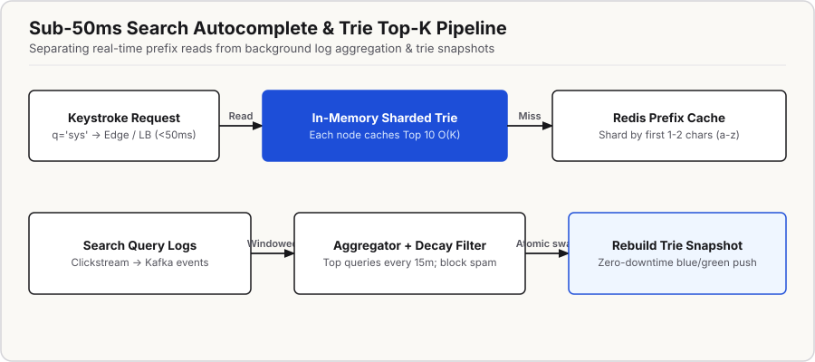

Module 37: System Design — Search Autocomplete System
Comprehensive architectural breakdown of a real-time Typeahead / Search Autocomplete Service (Google Instant style), covering Trie data structures, prefix node caching, offline frequency aggregation, and distributed Trie sharding.
Prerequisites
Before tackling search autocomplete, review these core modules:
- 10 - Caching Patterns (Read-through, prefix caching)
- 16 - Consistent Hashing (Sharding Trie nodes across Redis/memory servers)
- 27 - Back-of-the-Envelope Estimation (Sizing typeahead QPS and RAM footprints)
ELI5 (30-Second Summary)
When you type the letter "c" into Google, a dropdown instantly suggests "chatgpt", "calculator", and "cnn" before you even press a second key. If Google searched through billions of web pages for every keystroke, the internet would grind to a halt.
Instead, the search engine keeps a gigantic family tree of words called a Trie (Prefix Tree). At the letter "c" branch, it already has an index card pinned to it that says: "The top 5 most popular queries starting with 'c' are [chatgpt, calculator, cnn, craigslist, chase]".
Because the answers are pre-calculated and cached directly at every letter branch, looking up your suggestions takes less than 10 milliseconds!
Physical Analogy
Think of an Old-Fashioned Library Subject Index Rolodex:
| Library Analogy | Search Autocomplete Concept | Technical Description |
|---|---|---|
| Rolodex Drawer labeled "S" | Trie Root / Top-Level Node | First character index partition. |
| Sub-divider tab "Sy" | Trie Child Node | Prefix branch representing all phrases starting with "sy". |
| Sticky note on tab listing 5 best books | Cached Top-K Queries (top_k) |
In-memory list of top 5 highest frequency queries stored at that prefix node. |
| Librarian tallying checkout counts on Friday | Offline Aggregation (MapReduce / Spark) | Weekly batch job aggregating query log counts and updating Trie weights. |
| Typing a letter into search box | Keystroke Autocomplete API (GET /v1/search?q=sys) |
Returns instant JSON list of top suggestions in under 15ms. |
The Problem It Solves
A real-time search autocomplete system operates under extreme performance constraints:
- Ultra-Low Latency SLA: Humans perceive latency > 100 ms as lag. The typeahead dropdown must return within 30 - 50 ms end-to-end (including network transit time).
- Keystroke Amplification: For every 1 search submitted, a user types an average of 5 to 6 keystrokes, triggering 5 to 6 distinct backend API calls (5× write/read amplification).
- Massive Query Distribution: A search engine like Google handles billions of searches per day across hundreds of millions of unique query terms.
Visual Architecture

flowchart TD
subgraph ClientPath["1. Real-Time Query Path (Sub-20ms)"]
User["User Typing ('d-o-g')"] -->|"GET /v1/complete?q=dog"| CDN["Edge CDN / Cloudflare"]
CDN -->|"Cache Miss"| Gateway["API Gateway"]
Gateway --> AutoSvc["Autocomplete Service"]
AutoSvc --> TrieCache[("Trie In-Memory Cluster / Redis")]
TrieCache -->|"Return Top 5 Cached Queries"| AutoSvc
AutoSvc --> User
end
subgraph DataPipeline["2. Offline Data Collection & Aggregation Path"]
SearchLog["Search Query Logs (Kafka)"] --> LogStorage[("HDFS / S3 Raw Logs")]
LogStorage --> BatchJob["Spark / MapReduce Aggregator (Weekly)"]
BatchJob --> FreqTable[("Query Frequency Aggregation DB")]
FreqTable --> TrieBuilder["Trie Builder Worker"]
TrieBuilder --> Snapshot[("Trie Memory Snapshot (Protobuf)")]
Snapshot -->|"Deploy New Version"| TrieCache
endReal Numbers & System Sizing
Consider building autocomplete for a major platform with 100 Million Daily Active Users (DAU):
- Query Volume:
- 100M users × 10 searches/day = 1 billion searches/day.
- Average query length = 4 words ≈ 20 characters.
- Assume client debounces typing (sending 1 request every 3 characters) → 6 autocomplete requests/search.
- Total typeahead requests: 1B × 6 = 6 billion requests/day.
- Average QPS: 6B / 86,400 ≈ 70,000 QPS.
- Peak QPS (2×): ≈ 140,000 QPS.
- Trie Memory Footprint:
- Assume 20 million unique English search queries.
- Average query length: 30 bytes.
- To achieve sub-10ms latency, every Trie node caches the top 5 queries.
- Top 5 queries × 30 bytes = 150 bytes per prefix node.
- For a pruned 26-ary alphabet Trie with ≈ 30 million nodes:
- Storage required: 30M × (150 bytes + 64 bytes pointer overhead) ≈ 6.4 Gigabytes!
- 6.4 GB easily fits inside a single server's RAM. To handle 140,000 QPS, replicate the Trie across a 10-node read replica cluster.
Deep Dive: Under the Hood
1. The Trie Data Structure & Optimization
A standard Trie without caching requires:
- Traversing down to the prefix node P (O(L) where L is prefix length).
- Searching all descendant leaf nodes to find completions (O(N)).
- Sorting descendants by frequency to pick the top 5 (O(N \log K)).
This naive traversal is too slow for real-time typeahead. Optimization: Node-Level Top-K Caching:
- At every node along the prefix path, store an array of the top 5 highest-frequency queries:
Node("d") -> [("discord", 95M), ("disney", 80M), ("doordash", 65M)] - Lookups become strictly O(L), where L is the number of typed characters (typically ≤ 10). Finding suggestions is an instantaneous O(1) memory read once the node is reached!
2. Client-Side Debouncing
Mobile and web search inputs must implement client-side Debouncing:
- Do not fire an HTTP request on every keydown event.
- Wait until the user pauses typing for 150ms before dispatching the network request.
- This single optimization reduces backend API traffic by over 40%.
3. Asynchronous Log Aggregation
Updating the Trie in real time on every user search would cause catastrophic lock contention across hundreds of thousands of threads. Instead:
- Ingestion workers append raw query events to an append-only log in Kafka.
- A scheduled Spark job aggregates query counts over a rolling 7-day window.
- A new Trie snapshot is constructed offline and swapped into production memory atomically.
Trade-offs & Decision Matrix
| Dimension | Real-Time DB Query (LIKE 'sys%') |
ElasticSearch (Edge N-gram) | In-Memory Cached Trie Cluster |
|---|---|---|---|
| Lookup Latency | Slow (50 - 200 ms) | Fast (20 - 40 ms) | Ultra-fast (< 5 ms) |
| Memory Footprint | Low (disk-backed) | Moderate (Lucene inverted index) | High (stored entirely in RAM) |
| Real-time Updates | Instantaneous | Near-real-time (1 second) | Batch (weekly/daily rebuild) |
| Fuzzy Matching / Typo Tolerance | Poor | Excellent (built-in Levenshtein) | Harder (requires BK-trees or fuzzy Trie) |
Common Pitfalls & Anti-Patterns
- Updating the Trie Synchronously on Every Search: Attempting to increment frequencies directly in the live Trie causes thread deadlocks, cache invalidation thrashing, and memory corruption.
- Failing to Filter Harmful / Explicit Queries: Autocomplete suggestions appear automatically in user viewports without user confirmation. Autocomplete engines must pass suggestions through a real-time blacklist/profanity filter.
- Ignoring Geolocation / Language Context: Searching "metro" in Washington D.C. should suggest WMATA subway schedules, while in Paris it should suggest RATP. Store localized Trie partitions based on country/language code.
Try It Yourself
A runnable, zero-dependency Python simulation demonstrating a Trie prefix tree with pre-computed Top-K caching, frequency-weighted ranking, and fast prefix lookup is included in this directory.
Run the simulation:
python demo.py
Production References & Further Reading
- Google Research: Official Google Blog - Google Instant: Search at the Speed of Thought
- Facebook Engineering: Building Underdog - An In-Memory Autocomplete System
- Alex Xu: System Design Interview Vol 1 - Chapter 13 (Design Search Autocomplete System)
Top 5 Interview Questions with Model Answers
Q1: How do you reduce the search autocomplete lookup latency to under 30ms?
Model Answer:
- Pre-computed Top-K Caching at Every Trie Node: Avoid traversing subtree descendants at query time. Store the top 5 highest-frequency query strings directly at each prefix node (O(L) traversal).
- Edge CDN Caching: Cache common short prefixes (e.g., "g", "go", "a", "am") at Cloudflare/Akamai Edge PoPs with a 1-hour TTL, serving over 20% of requests without touching origin datacenters.
- Browser Local Caching: The client browser caches responses in-memory so typing and backspacing ("d" → "do" → "d") hits local browser memory instantly (< 1 ms).
Q2: How do you handle Trie scaling when the dataset exceeds the RAM of a single server?
Model Answer: We partition (shard) the Trie using Prefix-Based Sharding or Consistent Hashing:
- First-Character Sharding: Shard 1 handles 'a'-'m', Shard 2 handles 'n'-'z'. However, characters like 's' receive significantly more queries than 'x' or 'z'.
- Two-Tier Consistent Hashing: Hash prefixes like
co,ch,daacross a pool of Redis/in-memory servers. - A routing layer at the API Gateway inspects the prefix and routes the request directly to the appropriate Trie partition.
Q3: How do you handle trending or breaking news queries (e.g., World Cup final, celebrity news)?
Model Answer: A weekly batch MapReduce job misses sudden breaking news. We implement a Hybrid Dual-Trie Architecture:
- Historical Trie: Built weekly, capturing stable high-volume queries (e.g., "weather", "youtube", "facebook").
- Real-Time Trending Trie: Powered by a streaming engine (Apache Flink / Kafka). Flink aggregates query counts over a rolling 10-minute sliding window with exponential decay.
- When an autocomplete request arrives, the server queries both the Historical Trie and the Trending Trie, merging their top candidates with higher weight given to recent trending velocity.
Q4: How do you support typo tolerance in search autocomplete (e.g., "iphne" -> "iphone")?
Model Answer:
- Levenshtein / Edit Distance: Search neighbor branches in the Trie that differ by an edit distance of 1 (insert, delete, transpose).
- BK-Tree (Burkhard-Keller Tree): A specialized metric tree indexing words based on edit distance, allowing sub-linear lookup of typo candidates.
- Fuzzy N-gram Inverted Index: Index words by 3-character n-grams (e.g., "iphone" →
iph,pho,hon,one). Searchingiphintersects with the correct candidate.
Q5: How do you filter hate speech, offensive suggestions, or personal private data from autocomplete?
Model Answer:
- Blacklist Bloom Filter: Before returning suggestions from the Trie node, pass candidate strings through a high-speed in-memory Bloom filter containing banned keywords, slurs, and PII patterns (SSN, credit card numbers).
- Model Safety Classifier: Run an offline classification pass during the weekly Trie construction pipeline to purge toxic or inappropriate query strings before they ever enter the production Trie snapshot.
Check Yourself Quiz
1. What is the time complexity of looking up top suggestions in a Trie with node-level Top-K caching?
A) O(N log N) where N is all words in the dictionaryB) O(L) where L is the length of the typed prefix string
C) O(26^L)
D) O(1) independent of prefix length
Answer: B. Traversing down L prefix characters directly reaches the node containing the pre-computed top-k results.
2. Why is Trie updating performed via offline batch jobs rather than synchronously on every search?
A) Because Trie pointers cannot be updated in Python.B) To avoid thread lock contention, race conditions, and catastrophic latency degradation on live user searches.
C) Because search queries cannot be logged.
D) Because Redis does not support writes.
Answer: B. Millions of searches per second would deadlock Trie nodes; batch aggregation ensures deterministic read-only speed.
3. What client-side mechanism delays API calls until the user stops typing for 150ms?
A) ThrottlingB) Debouncing
C) Polling
D) WebSockets
Answer: B. Debouncing resets the timer on each keystroke, firing the network request only when typing pauses.
4. How does a hybrid dual-trie setup handle sudden breaking news queries?
A) By rebooting the entire cluster.B) By pairing a stable historical Trie with a real-time streaming Trie (Flink/Kafka) that tracks queries over rolling minutes.
C) By disabling autocomplete during breaking news.
D) By manually typing news queries into a database.
Answer: B. A streaming engine captures spikes in near-real-time while the historical Trie provides baseline stability.
5. Why is uniform alphabetical sharding (A-Z) an anti-pattern for Trie partitioning?
A) Because letters are stored in Unicode.B) Because query distribution across letters is highly non-uniform (e.g. 's' has 100x more queries than 'z'), causing severe hotspotting.
C) Because servers only accept numbers.
D) Because consistent hashing is illegal.
Answer: B. Common English prefixes overload specific letters while others remain idle, creating severe hotspot imbalance.